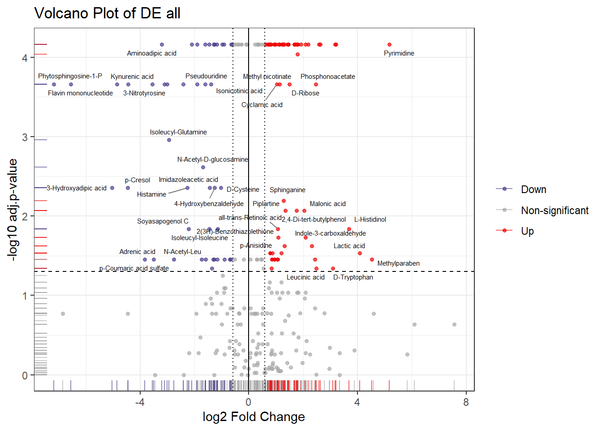

Section 4 Downstream Visualizations
Description: This pipeline performs downstream visualizations, including volcano plot, heatmap, and box plots.
Project Initialization:
#Sets the working directory and creates subfolders for organizing outputs.
mypath= "C:/Users/USER/Documents/Github/CRC_project/"
dir.create("output")
dir.create("plots")
dir.create("input")#Load libraries
library(tibble)
library(plyr)
library(dplyr)
library(tidyverse)
library(openxlsx)
library(cowplot)
library(ggplot2)
library(tibble)
library("RColorBrewer")
library("circlize")
library(ComplexHeatmap)
library(biomaRt)
library(dplyr)
library(plyr)
library(fields)
library(tidyr)
library(RColorBrewer)
library(viridis)
library(ggplot2)
library(ggrepel)#load data
data= read.csv(paste0(mypath,"input/data_for_downstream.csv"))
data = data %>% column_to_rownames(colnames(data)[1]) %>% dplyr::select(-1)
de= read.csv(paste0(mypath,"output/DE_sig.csv"))
de=de |> filter(abs(logFC) >= log2(3))
output_dir= paste0(mypath, "output/")
# set group distribution for samples
group_dist= gsub("_.*", "", colnames(data))
print(group_dist)## [1] "CRC" "CRC" "CRC" "CRC" "CRC" "CRC" "CRC" "CRC" "CRC" "Ctrl"
## [11] "Ctrl" "Ctrl" "Ctrl" "Ctrl" "Ctrl" "Ctrl" "Ctrl" "Ctrl" "Ctrl"group_levels= unique(group_dist)
group_colors <- c("#fc8d62", "#66c2a5")
names(group_colors) <- group_levels4.1 Volcano Plot
plot_volcano = function(file_path=NULL, df=NULL, name=NULL,
plot_dir = "plots", fc_threshold = 1.5) {
if (!dir.exists(plot_dir)) dir.create(plot_dir, recursive = TRUE)
# Read the DE result
if(!is.null(file_path)){
res <- read.csv(file_path)
name <- gsub(".*_([[:alnum:] ]+)\\.csv$", "\\1", basename(file_path))
}
if(!is.null(df) & !is.null(name)){
res= df
name= name
}
res <- as.data.frame(res)
colnames(res)[grepl("log",colnames(res) )]= "logFC"
colnames(res)[grepl("adj|FDR",colnames(res) )]= "padj"
res$padj[is.na(res$padj)]= res$pval[is.na(res$padj)]
# Define direction
res$Direction <- ifelse(res$padj <= 0.05 & res$logFC >= log2(fc_threshold), "Up",
ifelse(res$padj <= 0.05 & res$logFC <= -log2(fc_threshold), "Down",
"Non-significant"))
# Keep only labels for up or down expressed features
res <- res %>% mutate(features = ifelse(Direction %in% c("Up", "Down"), X, ""))
# Compute -log10(p-value)
res$log10p <- -log10(res$padj)
# Plot parameters
xminma <- -3.5
xmaxma <- 3.5
# Generate the plot
volcano <- ggplot(res, aes(x = logFC, y = log10p, color = Direction, label = features)) +
geom_point(size = 1.2, alpha = 0.7) +
geom_rug(alpha = 0.6) +
scale_color_manual(values = c("Up" = "red2", "Down" = "darkslateblue", "Non-significant" = "grey66")) +
xlab('log2 Fold Change') +
ylab('-log10 adj.p-value') +
#scale_x_continuous(limits = c(xminma, xmaxma)) +
theme_bw() +
theme(legend.title = element_blank()) +
geom_vline(xintercept = c(-log2(fc_threshold), 0, log2(fc_threshold)), linetype = c("dotted", "solid", "dotted")) +
geom_hline(yintercept = -log10(0.05), linetype = "dashed") +
geom_text_repel(aes(label = features),
size = 2,
max.overlaps = 10,
segment.color = "grey50",
color = "black") +
ggtitle(paste0("Volcano Plot of DE ", name))
# Print and save
print(volcano)
ggsave(filename = paste0(plot_dir, "/Volcanoplot_", name, ".jpg"),
plot = volcano,
dpi = 600,
width = 7,
height = 4)
}
4.2 Heatmap Plot
plot_heatmap= function(data= NULL, de= NULL, group_dist, group_colors ){
#you can use for loop for multiple groups DE files
data_sub= data[row.names(data) %in% de$X, ]
#data= data %>% dplyr::slice(1:50)
#row.names= gsub("\\%.*", "", row.names(data))
heat_data= t(scale(t(data_sub))) # center row wise
rownames(heat_data)= substr(rownames(heat_data), 1, 25)
ta <- HeatmapAnnotation(
Condition = group_dist,
col = list(
Condition = group_colors
),
annotation_height = unit(10, "mm")
)
#palt= colorRampPalette(c("blue4", "black", "#8B0000"))(256)
#palt= colorRampPalette(viridis(n = 8))(200)
palt= colorRamp2(c(-3, 0, 3), c("#053061", "#F7F5F4", "darkred"))
heatmap <- Heatmap(
matrix = as.matrix(heat_data),
name = "Normalized Intensity",
col =palt ,#' ## ' #' ## #' ## matlab::jet.colors(200),
show_row_names = TRUE,
cluster_rows = TRUE,
cluster_columns = TRUE,
show_column_names = FALSE,
row_names_gp = gpar(fontsize = 8),
top_annotation = ta,
heatmap_legend_param = list(
title= "Scaled\nIntensity",
title_gp = gpar(fontsize = 10, fontface = "bold"),
labels_gp = gpar(fontsize = 10),
legend_height = unit(4, "cm"),
legend_width = unit(.5, "cm")
)
)
print(heatmap)
png("plots/heatmap.png",width = 4000, height = 5000, res = 600)
draw(heatmap, annotation_legend_side = "right", heatmap_legend_side = "right") #"right"
dev.off()
}## png
## 24.3 Box Plots
# Loop over DE features
plot_box= function( data=NULL, de= NULL, group_dist){
data= data[row.names(data) %in% de$X, ]
data.t= t(data)
de <- as.data.frame(de)
colnames(de)[grepl("log",colnames(de) )]= "logFC"
colnames(de)[grepl("adj|FDR",colnames(de) )]= "padj"
de$padj[is.na(de$padj)]= de$pval[is.na(de$padj)]
for (m in colnames(data.t)) {
# Subset data
data.box = data.frame(
value= data.t[, m],
group= group_dist)
FDR= de$padj[de$X== m]
quartile.t= quantile( data.box$value, 0.90)
p= ggplot(data.box , aes(x = group , y = value , fill= group)) +
geom_boxplot() +
scale_fill_manual(values = group_colors )+
labs(title = paste0("Box Plot of Intensity for ", m, " Metabolite"), x = "",
y = "Intensity",
fill= "Groups")+
annotate("text",
x = 3.5,
y = quartile.t,
label = paste0( "FDR= " , round(FDR, 2)) ,
size = 3, fontface = "italic", hjust = 1) +
theme_minimal()+
theme(
axis.text.x = element_text(angle = 0, hjust = .65, size = 7),
axis.text.y = element_text(size = 7),
plot.title = element_text(size = 9),
axis.line = element_line(color = "black"),
panel.grid = element_blank(),
axis.ticks = element_blank(),
panel.border = element_blank())
print(p)
ggsave(paste0("plots/boxplot_" , m, ".png"), p, width=5, height =4, dpi=600)
}
}## R version 4.4.1 (2024-06-14 ucrt)
## Platform: x86_64-w64-mingw32/x64
## Running under: Windows 10 x64 (build 19045)
##
## Matrix products: default
##
##
## locale:
## [1] LC_COLLATE=English_United States.utf8
## [2] LC_CTYPE=English_United States.utf8
## [3] LC_MONETARY=English_United States.utf8
## [4] LC_NUMERIC=C
## [5] LC_TIME=English_United States.utf8
##
## time zone: Africa/Cairo
## tzcode source: internal
##
## attached base packages:
## [1] grid stats graphics grDevices utils datasets methods
## [8] base
##
## other attached packages:
## [1] ggrepel_0.9.6 viridis_0.6.5 fields_16.2
## [4] viridisLite_0.4.2 spam_2.10-0 biomaRt_2.61.2
## [7] ComplexHeatmap_2.21.0 circlize_0.4.16 RColorBrewer_1.1-3
## [10] memoise_2.0.1 caret_6.0-94 lattice_0.22-6
## [13] pls_2.8-3 Rserve_1.8-13 MetaboAnalystR_3.2.0
## [16] cowplot_1.1.3 DT_0.33 openxlsx_4.2.6.1
## [19] lubridate_1.9.3 forcats_1.0.0 stringr_1.5.1
## [22] purrr_1.0.2 readr_2.1.5 tidyr_1.3.1
## [25] ggplot2_3.5.1 tidyverse_2.0.0 dplyr_1.1.4
## [28] plyr_1.8.9 tibble_3.2.1
##
## loaded via a namespace (and not attached):
## [1] splines_4.4.1 filelock_1.0.3 bitops_1.0-7
## [4] hardhat_1.4.0 pROC_1.18.5 rpart_4.1.23
## [7] httr2_1.0.2 lifecycle_1.0.4 edgeR_4.3.5
## [10] doParallel_1.0.17 globals_0.16.3 MASS_7.3-60.2
## [13] scrime_1.3.5 crosstalk_1.2.1 magrittr_2.0.3
## [16] limma_3.61.5 plotly_4.10.4 sass_0.4.9
## [19] rmarkdown_2.27 jquerylib_0.1.4 yaml_2.3.10
## [22] zip_2.3.1 DBI_1.2.3 maps_3.4.2
## [25] zlibbioc_1.50.0 BiocGenerics_0.52.0 nnet_7.3-19
## [28] rappdirs_0.3.3 ipred_0.9-15 GenomeInfoDbData_1.2.12
## [31] lava_1.8.0 IRanges_2.38.1 S4Vectors_0.42.1
## [34] listenv_0.9.1 ellipse_0.5.0 parallelly_1.38.0
## [37] codetools_0.2-20 xml2_1.3.6 RApiSerialize_0.1.3
## [40] tidyselect_1.2.1 shape_1.4.6.1 UCSC.utils_1.1.0
## [43] farver_2.1.2 BiocFileCache_2.13.0 matrixStats_1.3.0
## [46] stats4_4.4.1 jsonlite_1.8.8 GetoptLong_1.0.5
## [49] multtest_2.61.0 e1071_1.7-14 survival_3.6-4
## [52] iterators_1.0.14 systemfonts_1.2.3 foreach_1.5.2
## [55] progress_1.2.3 tools_4.4.1 ragg_1.3.2
## [58] Rcpp_1.0.13 glue_1.7.0 gridExtra_2.3
## [61] prodlim_2024.06.25 xfun_0.46 GenomeInfoDb_1.41.1
## [64] crmn_0.0.21 withr_3.0.0 fastmap_1.2.0
## [67] caTools_1.18.2 digest_0.6.36 timechange_0.3.0
## [70] R6_2.5.1 textshaping_0.4.0 colorspace_2.1-1
## [73] Cairo_1.6-2 gtools_3.9.5 RSQLite_2.3.7
## [76] generics_0.1.3 data.table_1.15.4 recipes_1.1.0
## [79] class_7.3-22 prettyunits_1.2.0 httr_1.4.7
## [82] htmlwidgets_1.6.4 ModelMetrics_1.2.2.2 pkgconfig_2.0.3
## [85] gtable_0.3.5 timeDate_4032.109 blob_1.2.4
## [88] siggenes_1.79.0 impute_1.79.0 XVector_0.44.0
## [91] htmltools_0.5.8.1 dotCall64_1.1-1 bookdown_0.40
## [94] fgsea_1.31.0 clue_0.3-65 scales_1.3.0
## [97] Biobase_2.64.0 png_0.1-8 gower_1.0.1
## [100] knitr_1.48 rstudioapi_0.16.0 tzdb_0.4.0
## [103] reshape2_1.4.4 rjson_0.2.21 curl_5.2.1
## [106] nlme_3.1-164 proxy_0.4-27 cachem_1.1.0
## [109] GlobalOptions_0.1.2 KernSmooth_2.23-24 parallel_4.4.1
## [112] AnnotationDbi_1.67.0 pillar_1.11.0 vctrs_0.6.5
## [115] gplots_3.1.3.1 pcaMethods_1.97.0 stringfish_0.16.0
## [118] dbplyr_2.5.0 cluster_2.1.6 evaluate_0.24.0
## [121] magick_2.8.4 cli_3.6.3 locfit_1.5-9.10
## [124] compiler_4.4.1 rlang_1.1.4 crayon_1.5.3
## [127] future.apply_1.11.2 labeling_0.4.3 stringi_1.8.4
## [130] BiocParallel_1.39.0 munsell_0.5.1 Biostrings_2.72.1
## [133] lazyeval_0.2.2 Matrix_1.7-0 hms_1.1.3
## [136] glasso_1.11 bit64_4.0.5 future_1.33.2
## [139] KEGGREST_1.45.1 statmod_1.5.0 highr_0.11
## [142] qs_0.26.3 igraph_2.0.3 RcppParallel_5.1.8
## [145] bslib_0.8.0 fastmatch_1.1-4 bit_4.0.5